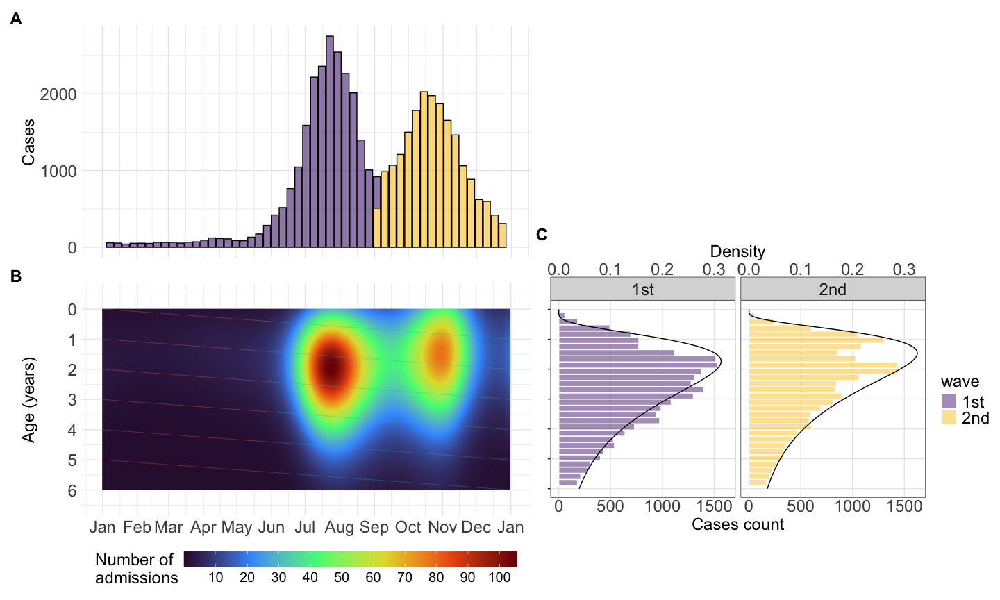
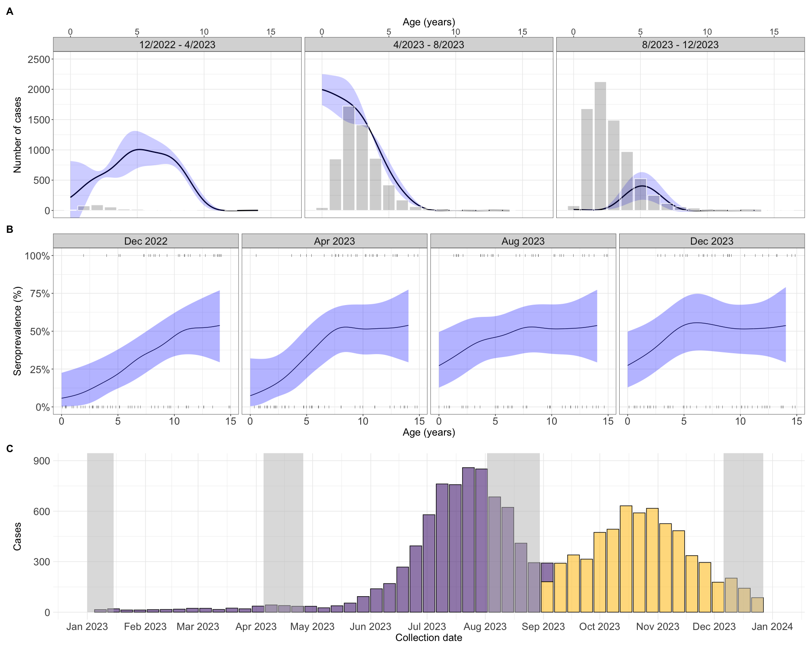
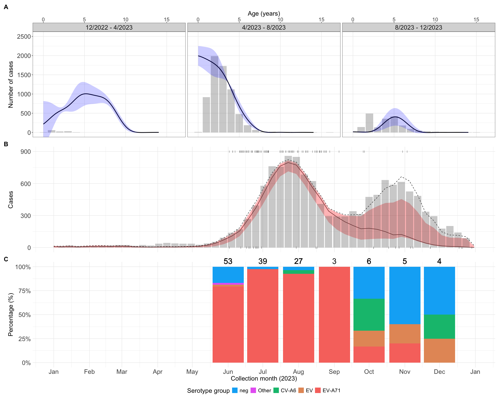
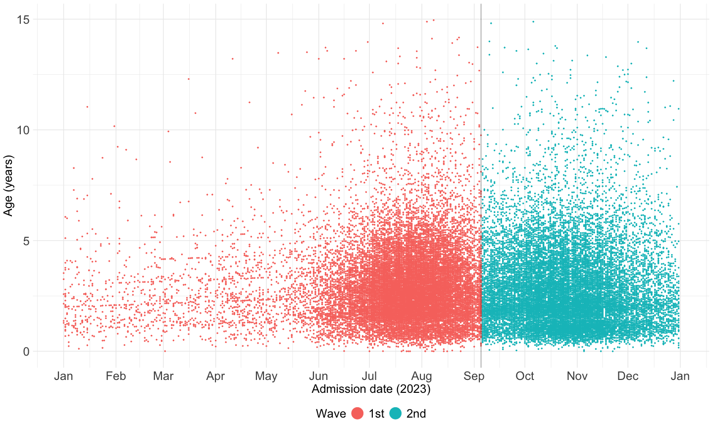
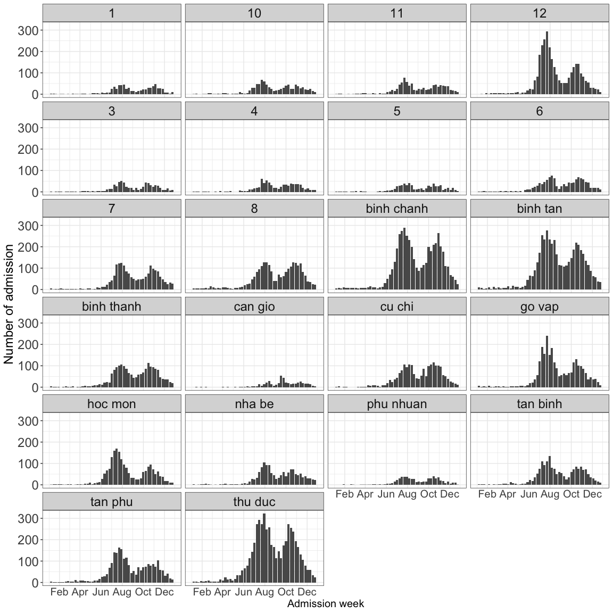
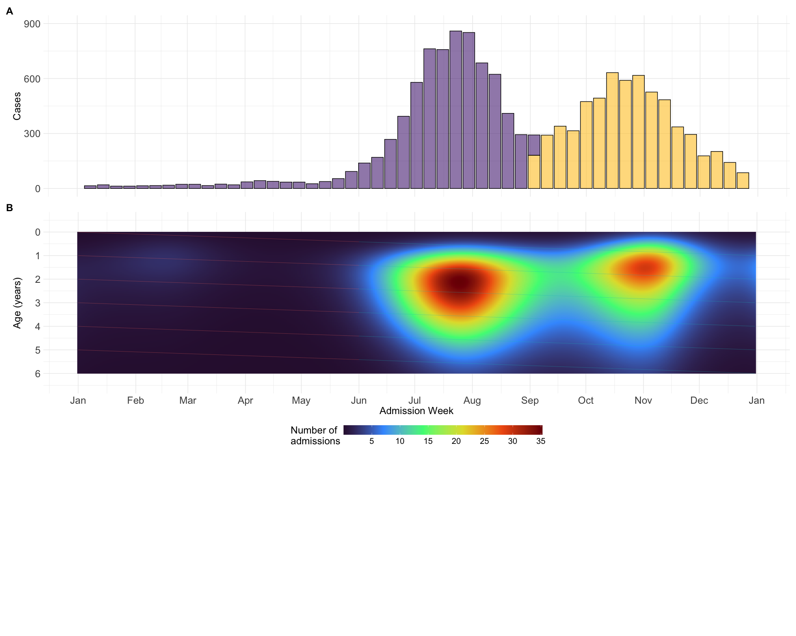
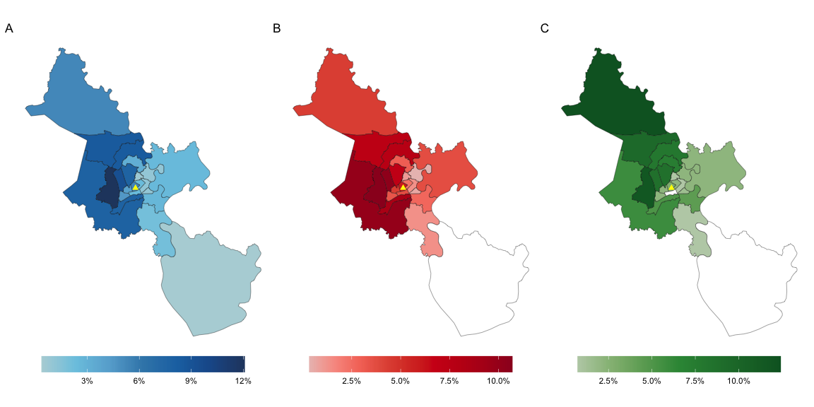

required <- c(
"readxl",
"magrittr",
"lubridate",
"janitor",
"tidyverse",
"stringi",
"stringr",
"gtsummary",
"zoo",
"patchwork",
"cluster",
"factoextra",
"fitdistrplus",
"mgcv",
"scam",
"sf"
)2 Manuscript figures
2.1 Library
Required packages:
Installing those that are not installed yet:
to_install <- required[!required %in% installed.packages()[, "Package"]]
if (length(to_install))
install.packages(to_install)Loading the packages for interactive use:
invisible(sapply(required, library, character.only = TRUE))2.2 Constant
user <- Sys.getenv("USER")
if (user == "nguyenpnt") {
path2data <- paste0(
"/Users/nguyenpnt/Library/CloudStorage/OneDrive-OxfordUniversityClinicalResearchUnit/Data/HFMD/cleaned/"
)
}
# Name of cleaned HFMD data file
cases_file <- "hfmd_hcdc.rds"
# Name of cleaned sero file
sero_file <- "sero_EV-A71_1222-1223.rds"
# Name of cleaned viro file
viro_file <- "virology_cleaned.rds"
# Name of outpatient data file
ch1_outpatient <- "CH1_outpatient_HCM_cleaned.rds"
path2ms_fig <- "/Users/nguyenpnt/OUCRU/HFMD/manuscript/fig/"2.3 Functions
Function to read data
readRDS2 <- function(x) readRDS(paste0(path2data, x))Function for table 1
calculate_prop_test <- function(data, variable, by, ...) {
# subset to non-missing
data <- tidyr::drop_na(data, dplyr::all_of(c(variable, by)))
prop.trend.test(
x = table(data[[variable]], data[[by]])[2, ], # get the second row (the positive row)
n = table(data[[by]])
) |>
broom::tidy()
}Overide select funtion
select <- dplyr::selectFunction to create the cohort lines
cohort_lines <- function(cohort_ages = seq(0, 5, by = 1),viro = FALSE){
start_date <- as.Date("2023-01-01")
end_date <- as.Date("2023-12-31")
## generate the cohort line
tseq <- seq(start_date, end_date, by = "day")
cohort_lines <- lapply(cohort_ages, function(a0){
data.frame(
date = tseq,
age = a0 + as.numeric(tseq - start_date) / 365,
cohort = as.factor(a0)
)
}) |> dplyr::bind_rows()
color_cohort <- ifelse(viro == TRUE,"black","#80FFFFFF")
## create mid-opacity white of cohort lines before June
cohort_lines <- cohort_lines |>
mutate(trend = case_when(
date < as.Date("2023-06-01") ~ color_cohort,
date >= as.Date("2023-06-01") ~ "#FFFFFFFF",
))
cohort_lines$group <- consecutive_id(cohort_lines$trend)
cohort_lines <- head(do.call(rbind, by(cohort_lines, cohort_lines$group, rbind, NA)), -1)
cohort_lines[, c("trend", "group")] <- lapply(cohort_lines[, c("trend", "group")], na.locf)
cohort_lines[] <- lapply(cohort_lines, na.locf, fromLast = T)
cohort_lines$trend <- factor(cohort_lines$trend,
levels = c(color_cohort,"#FFFFFFFF"))
cohort_lines
}Constrained algorithm for serological data
age_profile_constrained_cohort2 <- function(data,
age_values = seq(0, 15, le = 512),
ci = .95,
n = 100) {
predict2 <- function(...)
predict(..., type = "response") |> as.vector()
age_profile <- function(data,
age_values = seq(0, 15, le = 512),
ci = .95) {
model <- gam(pos ~ s(age), binomial, data)
link_inv <- family(model)$linkinv
df <- nrow(data) - length(coef(model))
p <- (1 - ci) / 2
model |>
predict(list(age = age_values), se.fit = TRUE) %>%
c(list(age = age_values), .) |>
as_tibble() |>
mutate(
lwr = link_inv(fit + qt(p, df) * se.fit),
upr = link_inv(fit + qt(1 - p, df) * se.fit),
fit = link_inv(fit)
) |>
dplyr::select(-se.fit)
}
age_profile_unconstrained <- function(data,
age_values = seq(0, 15, le = 512),
ci = .95) {
data |>
group_by(collection) |>
group_map( ~ age_profile(.x, age_values, ci))
}
shift_right <- function(n, x) {
if (n < 1)
return(x)
c(rep(NA, n), head(x, -n))
}
dpy <- 365 # number of days per year
mean_collection_times <<- data |>
group_by(collection) |>
summarise(mean_col_date = mean(col_date2)) |>
with(setNames(mean_col_date, collection))
cohorts <- cumsum(c(0, diff(mean_collection_times))) |>
divide_by(dpy * mean(diff(age_values))) |>
round() |>
map(shift_right, age_values)
age_time <- map2(mean_collection_times,
cohorts,
~ tibble(collection_time = .x, cohort = .y))
age_time_inv <- age_time |>
map( ~ cbind(.x, age = age_values)) |>
bind_rows() |>
na.exclude()
data |>
# Step 1:
group_by(collection) |>
group_modify( ~ .x |>
age_profile(age_values, ci) |>
mutate(across(c(fit, lwr, upr), ~ map(
.x, ~ rbinom(n, 1, .x)
)))) |>
group_split() |>
map2(age_time, bind_cols) |>
bind_rows() |>
unnest(c(fit, lwr, upr)) |>
pivot_longer(c(fit, lwr, upr), names_to = "line", values_to = "seropositvty") |>
# Step 2a:
filter(cohort < max(age) - diff(range(mean_collection_times)) / dpy) |>
group_by(cohort, line) |>
group_modify(
~ .x %>%
scam(seropositvty ~ s(collection_time, bs = "mpi"), binomial, .) |>
predict2(list(collection_time = mean_collection_times)) %>%
tibble(collection_time = mean_collection_times, seroprevalence = .)
) |>
ungroup() |>
group_by(collection_time, line) |>
group_modify( ~ .x |>
mutate(across(
seroprevalence, ~ gam(.x ~ s(cohort), betar) |>
predict2()
))) |> ### modified
ungroup() |>
pivot_wider(names_from = line, values_from = seroprevalence) |>
group_by(collection_time) |>
group_split()
}2.4 Data
Serological data:
df_sero <- readRDS2(sero_file)Virological data:
df_viro <- readRDS2(viro_file) %>%
mutate(pos = case_when(
sero_gr == "EV-A71" ~ TRUE,
sero_gr != "EV-A71" ~ FALSE),
pos_cv = case_when(
sero_gr == "CV-A6" ~ TRUE,
sero_gr != "CV-A6" ~ FALSE),
peak = case_when(
month(admission_date) >= 6 & month(admission_date) <= 8 ~ "6/2023 - 8/2023",
month(admission_date) >= 9 ~ "9/2023 - 12/2023"
),
adm_week = as.Date(floor_date(admission_date, "week")),
adm_month = as.Date(floor_date(admission_date, "month")),
time = as.numeric(admission_date)
)CH1 outpatient data:
ch1_outpatient <- readRDS2(ch1_outpatient)Case report data:
df23 <- cases_file |>
readRDS2() |>
dplyr::select(dob, admission_date, district, gender, inout, severity, medi_cen) |>
filter(year(admission_date) == 2023) |>
filter_out(is.na(dob)) |>
unique() |>
mutate(across(severity, ~ case_when(is.na(.x) ~ "Undefined",
severity %in% c("3", "4") ~ "3 or 4",
.default = severity) |> as.factor()),
across(medi_cen, ~ tolower(stri_trans_general(.x, "Latin-ASCII"))),
across(medi_cen,
~ case_when(.x == "benh vien nhi dong 1" ~ "Children's hospital 1",
.x == "benh vien benh nhiet doi tphcm" ~
"Hospital of Tropical Diseases",
.x == "benh vien nhi dong 2" ~ "Children's hospital 2",
.x == "benh vien nhi dong thanh pho" ~
"City Children's hospital", .default = .x)),
age1 = interval(dob, admission_date) / years(1),
time = as.numeric(admission_date),
adm_week = as.Date(floor_date(admission_date, "week")),
age = round(age1))HCMC map
vn_qh <- st_read(dsn = paste0(path2data, "gadm41_VNM.gpkg"), layer = "ADM_ADM_2")Reading layer `ADM_ADM_2' from data source
`/Users/nguyenpnt/Library/CloudStorage/OneDrive-OxfordUniversityClinicalResearchUnit/Data/HFMD/cleaned/gadm41_VNM.gpkg'
using driver `GPKG'
Simple feature collection with 710 features and 13 fields
Geometry type: MULTIPOLYGON
Dimension: XY
Bounding box: xmin: 102.1446 ymin: 8.381355 xmax: 109.4692 ymax: 23.39269
Geodetic CRS: WGS 84vn_qh1 <- vn_qh %>%
clean_names() %>% ## cho thành chữ thường
filter(
str_detect(
name_1,
"Hồ Chí Minh"
)
)
qhtp <- vn_qh1[-c(14,21),]
qhtp$geom[qhtp$varname_2 == "Thu Duc"] <- vn_qh1[c("21","24","14"),] %>%
st_union()
qhtp <- qhtp %>% st_cast("MULTIPOLYGON")
qhtp$varname_2 <- stri_trans_general(qhtp$varname_2, "latin-ascii") %>%
tolower() %>%
str_remove("district") %>%
trimws(which = "both")
qhtp$nl_name_2 <- c("BC","BTân","BT","CG","CC","GV",
"HM","NB","PN","1","10","11","12",
"3","4","5","6","7","8","TB",
"TP","TĐ")
## children hospital 1 coord
tdnd1 <- data.frame(long = 106.6702,
lat = 10.7686) %>%
st_as_sf(coords = c("long", "lat"), crs = 4326)2.5 Results
2.5.1 K-mean
Using k-mean clustering algorithm to separate 2 waves
set.seed(123)
kmeans_result_1 <- kmeans(df23[, c("age1", "time")], centers = 2, nstart = 25)
df23$wave <- factor(kmeans_result_1$cluster,
labels = c("1st", "2nd"),
levels = c(2, 1))
## show the time point that seperate two peaks
time_cut_1st <- df23 |>
filter(wave == "1st") |>
pull(time) |>
max()
time_cut_2nd <- df23 |>
filter(wave == "2nd") |>
pull(time) |>
min()
time_cut <- mean(time_cut_1st, time_cut_2nd) |> as.numeric()
time_cut[1] 19605So I selected time points at 1.9605^{4} to seperate two peaks
sup1 <- df23 |>
filter(age1 <= 15) |>
ggplot(aes(x = admission_date, y = age1, color = wave)) +
geom_point(size = .5) +
scale_x_datetime(date_breaks = "1 month" , date_labels = "%b") +
theme_minimal() +
geom_vline(xintercept = as.Date(time_cut), linewidth = .2) +
labs(x = "Admission date (2023)", y = "Age (years)") +
guides(color = guide_legend(override.aes = list(size = 8), title = "Wave")) +
theme(
axis.title.x = element_text(size = 18),
axis.text.x = element_text(size = 18),
axis.ticks.x = element_blank(),
legend.position = "bottom",
axis.title.y = element_text(size = 18),
axis.text.y = element_text(size = 18),
legend.text = element_text(size = 18),
legend.title = element_text(size = 18)
)ggsave(
paste0(path2ms_fig,"sup1.svg"),
plot = sup1,
width = 15,
height = 9,
dpi = 500
)2.5.2 Table 1
tab_age <-
df23 |>
tbl_summary(
by = wave,
label = list(age1 ~ "Age (Years)",
gender ~ "Gender"),
digits = list(all_continuous() ~ c(2, 2), all_categorical() ~ c(0, 2)),
include = c(age1,gender)
) |>
remove_row_type(type = "missing")
tab_sev <-
df23 |>
filter(severity != "Undefined") |>
dplyr::select(wave, severity) |>
mutate(rn = row_number()) |>
tidyr::spread(severity, severity) |>
mutate(across(-c(wave, rn), ~ ifelse(is.na(.), 0, 1))) |>
dplyr::select(-rn) |>
tbl_summary(
by = wave,
statistic = list(all_categorical() ~ "{n} / {N} ({p}%)"),
digits = all_categorical() ~ c(0, 0, 2)
) |>
modify_table_body(~ .x |>
mutate(row_type = "level", variable = "wave") %>%
{
bind_rows(tibble(
variable = "wave",
row_type = "label",
label = "Severity"
),
.)
})
tab_inout <-
df23 |>
filter(inout %in% c("Inpatient", "Outpatient")) |>
select(wave, inout) |>
mutate(rn = row_number()) |>
tidyr::spread(inout, inout) |>
mutate(across(-c(wave, rn), ~ ifelse(is.na(.), 0, 1))) |>
select(-rn) |>
tbl_summary(
by = wave,
statistic = list(all_categorical() ~ "{n} / {N} ({p}%)"),
digits = all_categorical() ~ c(0, 0, 2)
) |>
modify_table_body(~ .x |>
mutate(row_type = "level", variable = "wave") %>%
{
bind_rows(tibble(
variable = "wave",
row_type = "label",
label = "Treatment"
),
.)
})
final_table <- tbl_stack(list(tab_age, tab_sev, tab_inout), quiet = TRUE)
final_table| Characteristic | 1st N = 23,2531 |
2nd N = 19,9851 |
|---|---|---|
| Age (Years) | 2.66 (1.78, 3.75) | 2.34 (1.51, 3.68) |
| Gender | ||
| Female | 10,007 (43.04%) | 8,403 (42.05%) |
| Male | 13,246 (56.96%) | 11,582 (57.95%) |
| Severity | ||
| 1 | 5,207 / 8,200 (63.50%) | 4,177 / 5,797 (72.05%) |
| 2A | 2,447 / 8,200 (29.84%) | 1,455 / 5,797 (25.10%) |
| 2B | 415 / 8,200 (5.06%) | 128 / 5,797 (2.21%) |
| 3 or 4 | 131 / 8,200 (1.60%) | 37 / 5,797 (0.64%) |
| Treatment | ||
| Inpatient | 3,153 / 22,462 (14.04%) | 2,429 / 19,537 (12.43%) |
| Outpatient | 19,309 / 22,462 (85.96%) | 17,108 / 19,537 (87.57%) |
| 1 Median (Q1, Q3); n (%) | ||
2.5.3 Figure 1
f1a <- df23 |>
group_by(adm_week,wave) |>
count() |>
ungroup() |>
ggplot(aes(x = adm_week, y = n,fill = wave))+
geom_col(alpha = 0.6,color="black")+
scale_x_date(date_breaks = "1 month",
date_labels = "%b",
name = "Admission date (2023)",
limits = c(as.Date("2023-01-01"),as.Date("2023-12-31")))+
# geom_vline(xintercept = as.Date(time_cut))+
scale_fill_manual(values = c("#582C83FF","#FFC72CFF"))+
theme_minimal()+
labs(y = "Cases",tag = "A")+
theme(axis.title.y = element_text(size = 18),
axis.title.x = element_blank(),
axis.ticks.x = element_blank(),
legend.position = "bottom",
plot.tag = element_text(face = "bold", size = 18),
axis.text.x = element_blank(),
axis.text.y = element_text(size = 18),
legend.text = element_text(size = 15),
legend.title = element_text(size = 18))+
guides(fill = guide_colourbar(barwidth=20),
color = "none")## aggregate number of admission cases overtime
df_smooth <- df23 |>
mutate(age3 = floor(age1)) |>
group_by(admission_date, age3) |>
summarize(n = n(), .groups = "drop") |>
complete(age3, admission_date, fill = list(n = 0)) |>
mutate(
age = as.numeric(age3),
time = as.numeric(admission_date) # convert to numeric scale
)
## gam formular with tensor-product
fit_gau_bs <- gam(
n ~ s(age, bs = "bs") +
s(time, bs = "bs") +
ti(age, time, bs = c("bs", "bs")) ,
data = df_smooth,
family = gaussian(link = "log"),
method = "REML"
)
## create data for predict
age_val <- seq(0, 6, le = 365)
collection_date_val <- seq(min(df23$adm_week), max(df23$adm_week), le = 365)
new_data <- expand.grid(age = age_val, time = as.numeric(collection_date_val))
## predict
new_data$pred_gau_bs <- predict(fit_gau_bs, newdata = new_data, type = "response")
f1b <- ggplot(new_data) +
geom_raster(aes(x = as.Date(time), y = age, fill = pred_gau_bs), interpolate = TRUE) +
geom_line(
data = cohort_lines(),
aes(
x = date,
y = age,
group = cohort,
color = trend
),
linewidth = 0.3,
alpha = 0.4
) +
scale_x_date(date_breaks = "1 month", date_labels = "%b") +
scale_fill_viridis_c(option = "turbo", n.breaks = 10) +
theme_minimal() +
labs(x = "Admission date",
y = "Age (years)",
fill = "Number of\nadmissions",
tag = "B") +
theme_minimal() +
scale_y_reverse(name = "Age (years)",
lim = rev(c(-0.5, 6.5)),
breaks = seq(-1, 7)) +
theme(
axis.title.y = element_text(size = 18),
axis.title.x = element_blank(),
axis.ticks.x = element_blank(),
legend.position = "bottom",
plot.tag = element_text(face = "bold", size = 18),
axis.text.x = element_text(size = 18),
axis.text.y = element_text(size = 18),
legend.text = element_text(size = 15),
legend.title = element_text(size = 18)
) +
guides(fill = guide_colourbar(barwidth = 25), color = "none")fit1 <- fitdist(df23 %>% filter(age1 > 0 &
wave == "1st") %>% pull(age1), "lnorm")
fit2 <- fitdist(df23 %>% filter(age1 > 0 &
wave == "2nd") %>% pull(age1), "lnorm")
x_vals <- seq(0, 7, le = 512)
fit_1p <- data.frame(
wave = "1st",
age = x_vals,
density = dlnorm(
x_vals,
meanlog = fit1$estimate[1],
sdlog = fit1$estimate[2]
)
)
fit_2p <- data.frame(
wave = "2nd",
age = x_vals,
density = dlnorm(
x_vals,
meanlog = fit2$estimate[1],
sdlog = fit2$estimate[2]
)
)
f1c <- ggplot(data = df23) +
geom_histogram(aes(x = age1, fill = wave),
color = "white",
alpha = .5) +
scale_fill_manual(values = c("#582C83FF", "#FFC72CFF")) +
geom_line(data = rbind(fit_1p, fit_2p), aes(x = age, y = density * 5000)) +
facet_wrap( ~ wave) +
scale_x_reverse(
limit = c(6, 0),
breaks = seq(0, 6, by = 1),
minor_breaks = NULL
) +
scale_y_continuous(
minor_breaks = NULL,
name = "Cases count",
sec.axis = sec_axis(trans = ~ . / 5000, name = "Density")
) +
coord_flip() +
theme_bw() +
labs(x = "Age", y = "Density", tag = "C") +
theme(
axis.title.y = element_blank(),
axis.ticks.x = element_blank(),
# legend.position = "top",
plot.tag = element_text(face = "bold", size = 18),
axis.title.x = element_text(size = 18),
axis.text.y = element_blank(),
axis.text.x = element_text(size = 18),
legend.text = element_text(size = 18),
strip.text = element_text(size = 18),
legend.title = element_text(size = 18)
)fig1 <- ((f1a | plot_spacer()) /
(f1b | wrap_elements(full = f1c +
theme(
plot.margin = margin(-40, 0, 67, 0)
)))) +
plot_layout(widths = c(1, 1))
ggsave(
paste0(path2ms_fig,"fig1.svg"),
plot = fig1,
width = 15,
height = 9,
dpi = 500
)
fig1
2.5.4 Fig 2
Case report CH1
df_cases_ch1_23 <- df23 |>
filter(medi_cen == "Children's hospital 1")Outpatient admitted to CH1
expected_age_cm <- ch1_outpatient |>
group_by(period,age_gr) |>
summarise(total_adm = sum(n),.groups = "drop") |>
group_by(period) |>
group_modify(~ gam(total_adm~s(age_gr),method = "REML",data = .) %>%
predict(list(age_gr = seq(0,15,le = 512)),type="response") %>%
as.tibble() %>%
mutate(age = seq(0,15,le = 512)))Serological data CH1
df_sero <- df_sero |>
as_tibble() |>
mutate(
collection = id |>
str_remove(".*-") |>
as.numeric() |>
divide_by(1e4) |>
round(),
col_date2 = as.numeric(col_date),
across(pos, ~ .x > 0)
)Constraint algorithm
# outttt <- age_profile_constrained_cohort2(df_sero)
# save(outttt,mean_collection_times,file = paste0(path2ms_fig,"sero.RData"))
load(paste0(path2ms_fig,"sero.RData"))ouut <- list()
dat <- list()
for (i in 1:3) {
dat[[i]] <- df_cases_ch1_23 |>
filter(
admission_date >= as.Date(mean_collection_times[i]) &
admission_date <= as.Date(mean_collection_times[i + 1])
)
}
expected_incidence <- map2(
head(outttt, -1),
tail(outttt, -1),
~ left_join(na.exclude(.x), na.exclude(.y), "cohort") |>
mutate(
attack = (fit.y - fit.x) / (1 - fit.x),
date = as.Date(collection_time.y)
)
) |>
bind_rows() |>
mutate(
period = case_when(
date <= as.Date("2023-04-30") ~ "12/2022 - 4/2023",
date > as.Date("2023-04-30") &
date <= as.Date("2023-08-31") ~ "4/2023 - 8/2023",
date > as.Date("2023-08-31") ~ "8/2023 - 12/2023"
)
) |>
group_by(period) |>
group_split() |>
map( ~ left_join(.x, expected_age_cm, by = join_by(cohort == age, period))) %>%
bind_rows(.id = "id") |>
mutate(sp_gap = fit.y - fit.x, exp_inc = sp_gap * value)First I estimate the standard error of difference in seroprevalence between 2 successive collection time points by the following formula:
\[ SE_{diff} = \sqrt{SE_1^2 + SE_2^2 - 2\rho . SE_1 . SE_2} \]
\(\rho\) is the assumed correlation of seroprevalence between two successive collection times points. Because we applied the constraint algorithm, I think we assumed two collection time points are dependence. So I choose \(\rho = 1\)
rho = 1
expected_incidence <- expected_incidence |>
mutate(
se1 = (upr.x - lwr.x) / (2 * 1.96),
se2 = (upr.y - lwr.y) / (2 * 1.96),
se.diff = sqrt(se1^2 + se2^2 - 2 * rho * se1 * se2),
lo_diff = sp_gap - 1.96 * se.diff,
hi_diff = sp_gap + 1.96 * se.diff,
hi_exp_inc = hi_diff * value,
lo_exp_inc = lo_diff * value
) fig2a <- expected_incidence |>
ggplot() +
geom_line(aes(x = cohort, y = exp_inc),linewidth = 1) +
geom_ribbon(
aes(x = cohort, y = exp_inc, ymin = lo_exp_inc, ymax = hi_exp_inc),
alpha = 0.2,
fill = "blue"
) +
coord_cartesian(ylim = c(0, 2500)) +
geom_col(
data = dat %>%
bind_rows(.id = "id") %>%
filter(age1 > 0) |>
group_by(id, age) |>
count(),
aes(x = age, y = n),
color = "white",
fill = "black",
alpha = 0.2
) +
facet_wrap( ~ factor(
id,
labels = c("12/2022 - 4/2023", "4/2023 - 8/2023", "8/2023 - 12/2023")
)) +
labs(y = "Number of cases", x = "Age (years)", tag = "A") +
scale_x_continuous(position = "top")+
theme_bw() +
theme(
axis.text.x = element_text(size = 15),
axis.text.y = element_text(size = 18),
legend.text = element_text(size = 18),
plot.tag = element_text(face = "bold", size = 18),
axis.title.x = element_text(size = 18),
axis.title.y = element_text(size = 18),
legend.title = element_text(size = 18),
strip.text = element_text(size = 18),
panel.grid.minor.x = element_blank()
)fig2b <- outttt |>
bind_rows() |>
mutate(
col_date = as.Date(collection_time),
col_lab = format(col_date, format = "%b %Y"),
col_lab = factor(col_lab, levels = c(
"Dec 2022", "Apr 2023", "Aug 2023", "Dec 2023"
))
) |>
ggplot(aes(x = cohort, y = fit)) +
geom_line() +
geom_ribbon(aes(ymin = lwr, ymax = upr),
fill = "blue",
alpha = .3) +
geom_point(data = df_sero |>
mutate(col_lab = factor(
col_time, levels = c("Dec 2022", "Apr 2023", "Aug 2023", "Dec 2023")
)),
aes(x = age, y = pos),
shape = "|") +
facet_wrap(~ col_lab, nrow = 1) +
labs(y = "Seroprevalence (%)", x = "Age (years)", tag = "B") +
scale_y_continuous(labels = scales::label_percent(scale = 100),
limits = c(0, 1)) +
theme_bw() +
theme(
axis.title.x = element_text(size = 18),
axis.text.x = element_text(size = 18),
legend.position = "none",
plot.tag = element_text(face = "bold", size = 18),
axis.title.y = element_text(size = 18),
axis.text.y = element_text(size = 18),
strip.text.x = element_text(size = 18)
)fig2c <- df_cases_ch1_23 %>%
group_by(adm_week, wave) %>%
count() %>%
ggplot(aes(x = adm_week, y = n, fill = wave)) +
geom_col(alpha = 0.6, color = "black") +
scale_x_date(
date_breaks = "1 month",
date_labels = "%b %Y",
name = "Collection date",
limits = c(as.Date("2023-01-01"), as.Date("2023-12-31"))
) +
scale_y_continuous(limits = c(0, 900), breaks = seq(0, 900, le = 4)) +
scale_fill_manual(values = c("#582C83FF", "#FFC72CFF")) +
theme_minimal() +
annotate(
"rect",
fill = "grey",
xmin = as.Date(c(
"2023-01-01", "2023-04-05", "2023-08-02", "2023-12-06"
)),
xmax = as.Date(c(
"2023-01-15", "2023-04-26", "2023-08-30", "2023-12-27"
)),
ymin = 0,
ymax = Inf,
alpha = .5
) +
labs(y = "Cases",tag = "C") +
theme(
axis.title.y = element_text(size = 18),
axis.title.x = element_text(size = 18),
axis.ticks.x = element_blank(),
legend.position = "bottom",
plot.tag = element_text(face = "bold", size = 18),
axis.text.x = element_text(size = 18),
axis.text.y = element_text(size = 18),
legend.text = element_text(size = 15),
legend.title = element_text(size = 18)
) +
guides(fill = guide_colourbar(barwidth = 20), color = "none")fig2 <- (fig2a /
fig2b /
fig2c) +
plot_layout(heights = c(1, 1, 1))
ggsave(
paste0(path2ms_fig,"fig2.svg"),
plot = fig2,
width = 20,
height = 16,
dpi = 500
)
fig2
heatmap for ch1 (sup fig 3)
df_cases_count_ch1_23 <- df_cases_ch1_23 |>
group_by(age, time) |>
count() |>
ungroup()
fit_gau_bs_ch1 <- gam(
n ~ s(age, bs = "bs") +
s(time, bs = "bs") +
ti(age, time, bs = c("bs", "bs")) ,
data = df_cases_count_ch1_23,
family = gaussian(link = "log"),
method = "REML"
)
age_val <- seq(0, 6, le = 365)
collection_date_val <- seq(min(df23$adm_week), max(df23$adm_week), le = 365)
new_data2 <- expand.grid(age = age_val, time = as.numeric(collection_date_val))
new_data2$pred_gau_bs_ch1 <- predict(fit_gau_bs_ch1, newdata = new_data2, type = "response")sup3b <- ggplot(new_data2) +
geom_raster(aes(x = as.Date(time), y = age, fill = pred_gau_bs_ch1), interpolate = TRUE) +
geom_line(
data = cohort_lines(),
aes(
x = date,
y = age,
group = cohort,
color = trend
),
linewidth = 0.3,
alpha = 0.4
) +
scale_x_date(date_breaks = "1 month", date_labels = "%b") +
scale_fill_viridis_c(option = "turbo", n.breaks = 10) +
theme_minimal() +
labs(x = "Admission Week",
y = "Age (years)",
fill = "Number of\nadmissions",
tag = "B") +
theme_minimal() +
scale_y_reverse(name = "Age (years)",
lim = rev(c(-0.5, 6.5)),
breaks = seq(-1, 7)) +
theme(
axis.title.y = element_text(size = 18),
axis.title.x = element_text(size = 18),
axis.ticks.x = element_blank(),
legend.position = "bottom",
plot.tag = element_text(face = "bold", size = 18),
axis.text.x = element_text(size = 18),
axis.text.y = element_text(size = 18),
legend.text = element_text(size = 15),
legend.title = element_text(size = 18)
) +
guides(fill = guide_colourbar(barwidth = 25), color = "none")2.5.5 Fig 3
per_serotype <- df_viro %>%
group_by(adm_month) %>%
count(sero_gr) %>%
mutate(total = sum(n),
per = n/total) %>%
ggplot(aes(x = adm_month,y=per,fill = sero_gr))+
geom_bar(position="fill", stat="identity")+
scale_x_date(date_breaks = "1 month", date_labels = "%b",
limits = c(as.Date("2023-01-01"),as.Date("2023-12-31")),
name = "Collection month")+
scale_y_continuous(labels = scales::label_percent())+
labs(fill = "Serotype group",y = "Percentage (%)",tag = "B")+
theme_minimal()+
theme(axis.title.y = element_text(size = 18),
axis.title.x = element_text(size = 18),
axis.ticks.x = element_blank(),
legend.position = "bottom",
plot.tag = element_text(face = "bold", size = 18),
axis.text.x = element_text(size = 18),
axis.text.y = element_text(size = 18),
legend.text = element_text(size = 15),
legend.title = element_text(size = 18))Model perecentage of EV-A71 as a function of age and time
## model ev-a71 percentage as a function of time and age
model_viro_age_time <- gam(pos ~ s(age_adm) + s(time) + ti(age_adm,time),
family = binomial,method = "REML",data = df_viro)
collection_date_val <- seq(min(df_viro$time),
max(df_viro$time), le = 365)
new_data2 <- expand.grid(age_adm = age_val,
time = as.numeric(collection_date_val))
new_data2$pred <- predict(model_viro_age_time, newdata = new_data2, type = "response")Reconstruct epicurve
Model perecentage of EV-A71 as a function of age and time
## model ev-a71 percentage as a function of time and age
model_viro_age_time <- gam(pos ~ s(age_adm) + s(time) + ti(age_adm,time),
family = binomial,method = "REML",data = df_viro)
collection_date_val <- seq(min(df_viro$time),
max(df_viro$time), le = 365)
new_data2 <- expand.grid(age_adm = age_val,
time = as.numeric(collection_date_val))
new_data2$pred <- predict(model_viro_age_time, newdata = new_data2, type = "response")cases_fit <- fit_gau_bs_ch1 |>
predict(newdata = df_cases_count_ch1_23, se.fit = TRUE) |>
as.tibble() |>
cbind(df_cases_count_ch1_23) |>
mutate(
# c_lwr = fit_gau_bs_ch1$family$linkinv(fit - 1.96 * se.fit),
# c_upr = fit_gau_bs_ch1$family$linkinv(fit + 1.96 * se.fit),
c_fit = fit_gau_bs_ch1$family$linkinv(fit)
) |>
dplyr::select(-c(se.fit,fit))
recontructed_df <- model_viro_age_time |>
predict(newdata = df_cases_count_ch1_23 |> rename(age_adm = age), se.fit = TRUE) |>
as.tibble() |>
cbind(df_cases_count_ch1_23) |>
mutate(v_lwr = model_viro_age_time$family$linkinv(fit - 1.96 * se.fit),
v_upr = model_viro_age_time$family$linkinv(fit + 1.96 * se.fit),
v_fit = model_viro_age_time$family$linkinv(fit)) |>
dplyr::select(-c(se.fit,fit)) |>
full_join(cases_fit, by = join_by(age, time,n)) |>
mutate(ev71_c = c_fit*v_fit,
ev71_u = c_fit*v_upr,
ev71_l = c_fit*v_lwr)
recontructed_cases_count_df <- recontructed_df |>
mutate(day = as.Date(time),
week = as.Date(floor_date(day, "week"))) |>
group_by(week) |>
summarise(cases = sum(c_fit),
# cases_u = sum(c_upr),
# cases_l = sum(c_lwr),
ev71_cases = sum(ev71_c),
ev71_cases_u = sum(ev71_u),
ev71_cases_l = sum(ev71_l)) fig3a <- recontructed_df |>
mutate(
day = as.Date(time),
week = as.Date(floor_date(day, "week")),
period = case_when(
week <= as.Date("2023-04-30") ~ "12/2022 - 4/2023",
week > as.Date("2023-04-30") &
week <= as.Date("2023-08-31") ~ "4/2023 - 8/2023",
week > as.Date("2023-08-31") ~ "8/2023 - 12/2023"
)
) |>
group_by(period, age) |>
summarise(
ev_a71_cases = sum(ev71_c),
raw_n = sum(n),
.groups = "drop"
) |>
ggplot(aes(x = age, y = ev_a71_cases)) +
geom_col(alpha = 0.3) +
geom_line(data = expected_incidence, aes(x = cohort, y = exp_inc),linewidth = 1) +
geom_ribbon(
data = expected_incidence,
aes(x = cohort, y = exp_inc, ymin = lo_exp_inc, ymax = hi_exp_inc),
alpha = 0.2,
fill = "blue"
) +
coord_cartesian(ylim = c(0, 2500)) +
scale_x_continuous(position = "top") +
facet_wrap( ~ period) +
labs(y = "Number of cases", x = "Age (years)", tag = "A") +
theme_bw() +
theme(
axis.text.x = element_text(size = 15),
axis.text.y = element_text(size = 18),
legend.text = element_text(size = 18),
plot.tag = element_text(face = "bold", size = 18),
axis.title.x = element_text(size = 18),
axis.title.y = element_text(size = 18),
legend.title = element_text(size = 18),
strip.text = element_text(size = 18),
panel.grid.minor.x = element_blank()
)fig3b <- recontructed_cases_count_df |>
ggplot(aes(x = week))+
geom_line(aes(y = cases),linetype = "dashed")+
# geom_ribbon(aes(ymin = cases_u,ymax = cases_l),fill = "blue",alpha = .3)+
geom_line(aes(y = ev71_cases))+
geom_ribbon(aes(ymin = ev71_cases_u,ymax = ev71_cases_l),fill = "red",alpha = .3)+
geom_col(data = df_cases_count_ch1_23 |>
mutate(day = as.Date(time),
week = as.Date(floor_date(day, "week")))|>
group_by(week) |>
summarise(cases = sum(n)),
aes(x = week, y = cases),alpha = .3)+
geom_point(data = df_viro, aes(x = admission_date, y = pos*900),shape = "|",size = 2)+
scale_x_date(date_breaks = "1 month",
date_labels = "%b",
name = "Collection date",
limits = c(as.Date("2023-01-01"),as.Date("2023-12-31"))) +
scale_y_continuous(limits = c(0,900),breaks = seq(0,900, le = 4))+
labs(x = "Admission day (2023)",y = "Cases", tag = "B") +
theme_minimal()+
theme(axis.title.y = element_text(size = 18),
axis.title.x = element_blank(),
axis.ticks.x = element_blank(),
legend.position = "bottom",
plot.tag = element_text(face = "bold", size = 18),
axis.text.x = element_blank(),
axis.text.y = element_text(size = 18),
legend.text = element_text(size = 15),
legend.title = element_text(size = 18))+
guides(fill=guide_colourbar(barwidth=20),
color = "none")fig3c <- df_viro %>%
group_by(adm_month) %>%
count(sero_gr) %>%
mutate(total = sum(n), per = n / total) %>%
ggplot(aes(
x = adm_month,
y = per,
fill = factor(sero_gr, levels = c("neg", "Other", "CV-A6", "EV", "EV-A71"))
)) +
geom_bar(position = "fill", stat = "identity") +
geom_text(
aes(label = total, y = 1),
stat = "unique",
vjust = -0.5,
size = 8
) +
scale_x_date(
date_breaks = "1 month",
date_labels = "%b",
limits = c(as.Date("2023-01-01"), as.Date("2023-12-31")),
name = "Collection month (2023)"
) +
scale_y_continuous(labels = scales::label_percent()) + # extra space for label
scale_fill_manual(
values = c(
"neg" = "#00B0F6",
"Other" = "#E76BF3",
"CV-A6" = "#00BF7D",
"EV" = "#E59866",
"EV-A71" = "#F8766D"
)
) +
labs(y = "Percentage (%)", fill = "Serotype group", tag = "C") +
theme_minimal() +
theme(
axis.title.y = element_text(size = 18),
axis.title.x = element_text(size = 18),
axis.ticks.x = element_blank(),
legend.position = "bottom",
plot.tag = element_text(face = "bold", size = 18),
axis.text.x = element_text(size = 18),
axis.text.y = element_text(size = 18),
legend.text = element_text(size = 15),
legend.title = element_text(size = 18)
)fig3c <- fig3c + coord_cartesian(clip = "off")
fig3 <- (fig3a /
fig3b /
fig3c) +
plot_layout(heights = c(1, 1, 1))
ggsave(
paste0(path2ms_fig,"fig3.svg"),
plot = fig3,
width = 20,
height = 16,
dpi = 500
)
fig3
2.6 Supplementary fig
2.6.1 Sup fig 1
sup1
2.6.2 Sup fig 2: geography
sup2 <- df23 %>%
group_by(adm_week, district) %>%
count() %>%
ggplot(aes(x = adm_week, y = n)) +
geom_col() +
scale_x_date(
date_breaks = "2 months",
date_labels = "%b",
name = "Admission week",
limits = c(as.Date("2023-01-01"), as.Date("2023-12-31"))
) +
theme_bw() +
labs(y = "Number of admission") +
facet_wrap( ~ district, ncol = 4) +
theme(
axis.title.x = element_text(size = 15),
axis.text.x = element_text(size = 15),
axis.ticks.x = element_blank(),
legend.position = "none",
plot.tag = element_text(face = "bold", size = 18),
axis.title.y = element_text(size = 18),
axis.text.y = element_text(size = 18),
strip.text.x = element_text(size = 18)
)
ggsave(
paste0(path2ms_fig,"sup2.svg"),
plot = sup2,
width = 12,
height = 12,
dpi = 500
)
sup2
2.6.3 Sup fig 3
sup3a <- df_cases_ch1_23 %>%
group_by(adm_week, wave) %>%
count() %>%
ggplot(aes(x = adm_week, y = n, fill = wave)) +
geom_col(alpha = 0.6, color = "black") +
scale_x_date(
date_breaks = "1 month",
date_labels = "%b %Y",
name = "Collection date",
limits = c(as.Date("2023-01-01"), as.Date("2023-12-31"))
) +
scale_y_continuous(limits = c(0, 900), breaks = seq(0, 900, le = 4)) +
scale_fill_manual(values = c("#582C83FF", "#FFC72CFF")) +
theme_minimal() +
labs(y = "Cases", tag = "A") +
theme(
axis.title.y = element_text(size = 18),
axis.title.x = element_blank(),
axis.ticks.x = element_blank(),
legend.position = "bottom",
plot.tag = element_text(face = "bold", size = 18),
axis.text.x = element_blank(),
axis.text.y = element_text(size = 18),
legend.text = element_text(size = 15),
legend.title = element_text(size = 18)
) +
guides(fill = guide_colourbar(barwidth = 20), color = "none")sup3 <- (sup3a /
sup3b) +
plot_layout(heights = c(1, 1, 1))
ggsave(
paste0(path2ms_fig,"sup3.svg"),
plot = sup3,
width = 20,
height = 16,
dpi = 500
)
sup3
2.6.4 Sup fig 4: Correspondence between spatial distribution of serum samples and hopital catchment of CH1
hos_catch <- df_cases_ch1_23 |>
group_by(district) |>
count() |>
ungroup() |>
mutate(per = n / sum(n)) |>
right_join(qhtp, by = join_by(district == varname_2)) |>
ggplot() +
geom_sf(aes(fill = per, geometry = geom), show.legend = T) +
paletteer::scale_fill_paletteer_c(
"ggthemes::Classic Blue",
na.value = "white",
labels = scales::label_percent(),
name = "Percentage"
)+
geom_sf(
data = tdnd1,
shape = 17,
color = "yellow",
size = 2
) +
labs(tag = "A")+
theme_void() +
theme(legend.position = "bottom",
legend.title = element_blank())+
guides(fill = guide_colourbar(barwidth = 15), color = "none")sero_dis <- df_sero |>
group_by(district) |>
count() |>
ungroup() |>
mutate(per = n / sum(n)) |>
right_join(qhtp, by = join_by(district == varname_2)) |>
ggplot() +
geom_sf(aes(fill = per, geometry = geom), show.legend = T) +
paletteer::scale_fill_paletteer_c(
"ggthemes::Classic Red",
na.value = "white",
labels = scales::label_percent(),
name = "Percentage"
) +
geom_sf(
data = tdnd1,
shape = 17,
color = "yellow",
size = 2
) +
theme_void() +
labs(tag = "B")+
theme(legend.position = "bottom",
legend.title = element_blank())+
guides(fill = guide_colourbar(barwidth = 15), color = "none")viro_dis <- df_viro |>
mutate(district = case_when(
district %in% c("thu duc", "9", "2") ~ "thu duc",
.default = district
)) |>
group_by(district) |>
count() |>
ungroup() |>
mutate(per = n / sum(n)) |>
right_join(qhtp, by = join_by(district == varname_2)) |>
ggplot() +
geom_sf(aes(fill = per, geometry = geom), show.legend = T) +
paletteer::scale_fill_paletteer_c(
"ggthemes::Classic Green",
na.value = "white",
labels = scales::label_percent(),
name = "Percentage"
)+
geom_sf(
data = tdnd1,
shape = 17,
color = "yellow",
size = 2
) +
labs(tag = "C")+
theme_void() +
theme(legend.position = "bottom",
legend.title = element_blank())+
guides(fill = guide_colourbar(barwidth = 15), color = "none")sup4 <- hos_catch | sero_dis | viro_dis
ggsave(
paste0(path2ms_fig,"sup4.svg"),
plot = sup4,
width = 12,
height = 6,
dpi = 500
)
sup4
2.7 Statistical analysis
2.7.1 Fig 2A
Max
dat %>%
bind_rows(.id = "id") %>%
filter(age1 > 0) |>
group_by(id, age) |>
count() |>
filter(id == 1)# A tibble: 11 × 3
# Groups: id, age [11]
id age n
<chr> <dbl> <int>
1 1 0 8
2 1 1 74
3 1 2 92
4 1 3 56
5 1 4 21
6 1 5 17
7 1 6 8
8 1 7 2
9 1 8 1
10 1 9 1
11 1 12 1Median [Q1,Q3]
dat %>%
bind_rows(.id = "id") %>%
filter(age1 > 0) |>
group_by(id, age) |>
count() |>
ungroup() |>
filter(id == 1 & age %in% 1:3) |>
summarise(median = median(n),
q1 = quantile(n, 0.25),
q3 = quantile(n, 0.75))# A tibble: 1 × 3
median q1 q3
<int> <dbl> <dbl>
1 74 65 83dat %>%
bind_rows(.id = "id") %>%
filter(age1 > 0) |>
group_by(id, age) |>
count() |>
filter(id == 2)# A tibble: 15 × 3
# Groups: id, age [15]
id age n
<chr> <dbl> <int>
1 2 0 47
2 2 1 849
3 2 2 1722
4 2 3 1412
5 2 4 859
6 2 5 420
7 2 6 171
8 2 7 63
9 2 8 27
10 2 9 25
11 2 10 11
12 2 11 15
13 2 12 5
14 2 13 1
15 2 14 1Median [Q1,Q3]
dat %>%
bind_rows(.id = "id") %>%
filter(age1 > 0) |>
group_by(id, age) |>
count() |>
ungroup() |>
filter(id == 2 & age %in% 1:6) |>
summarise(median = median(n),
q1 = quantile(n, 0.25),
q3 = quantile(n, 0.75))# A tibble: 1 × 3
median q1 q3
<dbl> <dbl> <dbl>
1 854 527. 1274.dat %>%
bind_rows(.id = "id") %>%
filter(age1 > 0) |>
group_by(id, age) |>
count() |>
filter(id == 3)# A tibble: 17 × 3
# Groups: id, age [17]
id age n
<chr> <dbl> <int>
1 3 0 77
2 3 1 1679
3 3 2 2125
4 3 3 1489
5 3 4 971
6 3 5 525
7 3 6 250
8 3 7 116
9 3 8 60
10 3 9 39
11 3 10 19
12 3 11 15
13 3 12 6
14 3 13 2
15 3 14 3
16 3 15 1
17 3 16 1Median [Q1,Q3]
dat %>%
bind_rows(.id = "id") %>%
filter(age1 > 0) |>
group_by(id, age) |>
count() |>
ungroup() |>
filter(id == 3 & age %in% 1:7) |>
summarise(median = median(n),
q1 = quantile(n, 0.25),
q3 = quantile(n, 0.75))# A tibble: 1 × 3
median q1 q3
<int> <dbl> <dbl>
1 971 388. 1584